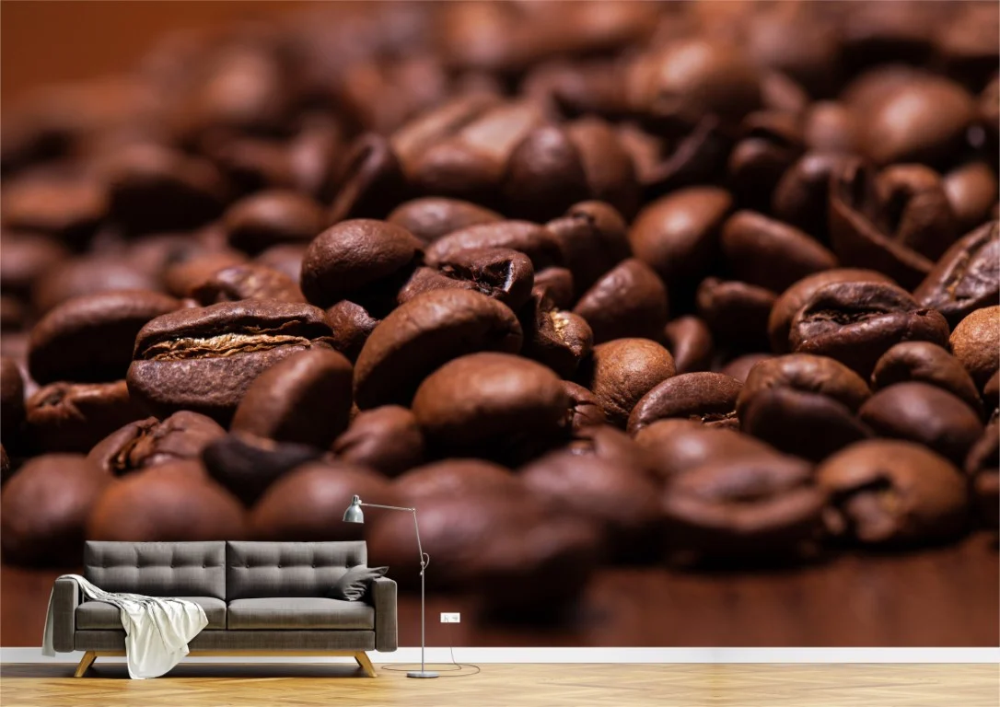

Cafeaua
Cafeaua este o băutură de culoare neagră ce conține cofeină și care se obține din boabe de
cafea
prăjite și
măcinate. Boabele de cafea sunt fructele arborilor de cafea din familia Rubiaceae, genul Coffea, cu două
varietăți
mai importante: Coffea arabica și Coffea robusta (Coffea canephora). Coffea arabica furnizează sorturile cu
aromele cele mai fine, pe când Coffea robusta este mai amară și mai puțin aromată. Calitatea cafelei este
influențată de locul de cultivare, depozitare și procesul de torefiere a boabelor de cafea.
Cafeaua este un lichid de culoare neagră, este amară și ușor acidulată, având un efect
stimulant
la oameni
datorită conținutului de cofeină. Este una dintre cele mai populare băuturi și se poate consumă în diferite
forme
(de exemplu espresso sau cappuccino). De obicei este consumată ca o băutură caldă, dar cafeaua cu gheață este o
alternativă răspândită. Unele studii indică faptul că are un efect benefic asupra adulților, însă studiile pe
termen lung nu au putut demonstra acest lucru datorită calității precare ale acestora.

O boabă de cafea este o sămânță a plantei Coffea și sursa de cafea. Este drupa din
interiorul fructului roșu sau
purpuriu denumit adesea cireș. La fel ca și cireșele obișnuite, fructele de cafea sunt și un așa-numit fruct de
piatră. Fructele - cireșele de cafea sau fructele de cafea - conțin cel mai adesea două drupe cu laturile lor
plate. Un procent mic de cireșe conține o singură sămânță, în loc de cele două obișnuite. Boabele cu o singură
sămânță reprezintă aproximativ 10 și 15% din total și este o credință destul de comună (totuși neprobată
științific) că au mai multă aromă decât boabele de cafea normale.[1] La fel ca nucile din Brazilia (o sămânță)
și
orezul alb, boabele de cafea constă în mare parte din endosperm.[2]
Cele mai importante două soiuri de plante de cafea sunt Arabica și Robusta; ~60% din cafeaua produsă în întreaga
lume este Arabica și ~40% este Robusta.[3] Boabele Arabica constă din 0,81,4% cofeină și boabele Robusta constă
din 1,74% cofeină.[4] Deoarece cafeaua este una dintre cele mai consumate băuturi la nivel mondial, boabele de
cafea reprezintă o cultură majoră de numerar și un produs important la export, reprezentând peste 50% din
veniturile obținute din valutele națiunilor în curs de dezvoltare.